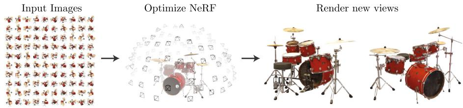

① 网格 / 体素 / MPI 这类离散表示。原文一句很重的话：它们的扩展性「is fundamentally limited by poor time and space complexity due to their discrete sampling」——因为要在 3D 空间里离散地采样，时间和空间的复杂度都很差；而且「rendering higher resolution images requires a finer sampling of 3D space」——想渲染更高分辨率，就得把 3D 空间采样得更密，存储和计算跟着爆。换句话说，分辨率一高，这种表示就被自己的离散采样拖垮。
② SRN 这类隐式曲面方法。它们把场景建成一个隐式曲面，但原文说它们「limited to simple shapes with low geometric complexity, resulting in oversmoothed renderings」——只能憋出简单形状，几何复杂度一高就「过平滑」，画面糊掉。
★ NeRF 的策略：换成连续 5D 辐射场
NeRF 不走离散采样，而是把场景建模成一个连续的 5D 辐射场（radiance field）。输入是位置 $(x,y,z)$ 加上观察方向 $(\theta,\phi)$，输出是颜色 $\mathbf c$ 和体密度 $\sigma$。因为「连续」意味着可以任意精度查询，就绕开了离散采样的内存代价——原文说它「requires just a fraction of the storage cost of those sampled volumetric representations」（只需采样式体表示存储代价的一小部分）。代价是优化慢，这正是后面两节（0037–0038）要打的靶子。
还有一句很有冲击力的原话（原文第 26 行），建议你记住：
「Crucially, our method overcomes the prohibitive storage costs of discretized voxel grids when modeling complex scenes at high-resolutions.」（关键的是，我们的方法在建模高分辨率复杂场景时，克服了离散体素网格那令人咋舌的存储成本。）
下面这张图就是整个任务的「一图定义」：左边一圈是稀疏输入视角，右边两个是新合成的视角。

原图注（Fig. 1）：We present a method that optimizes a continuous 5D neural radiance field representation (volume density and view-dependent color at any continuous location) of a scene from a set of input images… Here, we visualize the set of 100 input views of the synthetic Drums scene randomly captured on a surrounding hemisphere, and we show two novel views rendered from our optimized NeRF representation.（我们提出一种方法，从一组输入图像优化出场景的连续 5D 神经辐射场表示（任意连续位置上的体密度与视角相关颜色）……这里可视化合成 Drums 场景在环绕半球上随机采集的 100 个输入视角，以及从优化后的 NeRF 表示渲染出的两个新视角。） 怎么看这张图：这是整篇论文的任务定义图。左边（或上方）是环绕半球的 100 个输入相机位姿、全是真实拍到的视角；右边（或下方）两个是模型「脑补」出来的新视角——这些角度根本没拍过。一张图就讲清了「输入是一圈稀疏视角、输出是任意新视角」这回事。
2. 相关工作：两条脉络
原文把前人的工作分成两条脉络，理解这两条脉络，你才知道 NeRF 站在哪个岔路口上。
(i) Neural 3D Shape Representations
用神经网络表示 3D 形状，典型是 SDF（符号距离场）或 occupancy（占据场）。这一类要么依赖 3D 真值当监督，要么用可微渲染放松这个要求、只用图像来训练。它们关心的是「表面在哪」，而不是「从某方向看是什么颜色」。
对 mesh-based 方法的批评，原文有两点：第一，image reprojection（图像重投影）优化「often has local minima and is ill-posed」——容易卡在局部极小、而且本身是病态问题；第二，它需要「a template mesh with fixed topology」——一个固定拓扑的模板网格，换个形状就得换模板，不灵活。
$\sigma(\mathbf x)$：体密度。原文给了一个极准的定义——它是「一束光线在位置 $\mathbf x$ 处、被一个无穷小颗粒终止的微分概率」（the differential probability that the ray terminates at an infinitesimal particle at location $\mathbf x$）。注意「微分概率」四个字：它不是「一定会停」，而是「在这一点附近、单位距离里停下来的概率密度」。
$T(t)$：累积透射率（accumulated transmittance）。原文定义它是「光线从 $t_n$ 走到 $t$而没有撞上任何颗粒的概率」（the probability that the ray travels from $t_n$ to $t$ without hitting any other particle）。
原图注（Fig. 2）：An overview of our neural radiance field scene representation and differentiable rendering procedure. We synthesize images by sampling 5D coordinates (location and viewing direction) along camera rays (a), feeding those locations into an MLP to produce a color and volume density (b), and using volume rendering techniques to composite these values into an image (c). This rendering function is differentiable, so we can optimize our scene representation by minimizing the residual between synthesized and ground truth observed images (d).（神经辐射场场景表示与可微渲染流程总览——沿相机光线采样 5D 坐标 (a) → 送入 MLP 输出颜色与体密度 (b) → 用体渲染合成图像 (c) → 该渲染函数可微，故可用合成图与真值图的残差反传优化场景表示 (d)。） 怎么看这张图：这是本节的头号图，也是整篇论文的「地图」。(a) 沿相机光线采样 5D 坐标、(b) 丢进一个 MLP 吐出颜色和体密度、(c) 用体渲染把这一串值合成成一张图、(d) 因为合成可微，就能用「合成图 − 真值图」的残差反传去优化场景。请记住这四步 (a)(b)(c)(d)，它们正好对应本节的四个小节。
原图注（Fig. 3）：A visualization of view-dependent emitted radiance… we visualize example directional color distributions for two spatial locations in our neural representation of the Ship scene… (c) we show how this behavior generalizes continuously across the whole hemisphere of viewing directions.（视角相关出射辐射的可视化……我们可视化 Ship 场景神经表示中两个空间位置的方向色分布……(c) 展示这种行为如何在整个视角半球上连续泛化。） 怎么看这张图：它解释的是 5D 里那 2D 方向分量到底有什么用。图里两个空间点，从不同角度看会呈现不同颜色；(c) 显示这种行为能在整个「视角半球」上连续地泛化。这就是推土机履带上的镜面反光、水面的闪烁这类非朗伯效应——正因为把方向也作为输入，NeRF 才抓得住。
也就是把 $[t_n,t_f]$ 均分成 $N$ 段，第 $i$ 段里抽一点 $t_i$。为什么要随机、而不是固定点？原文说，如果用确定性的求积（固定点），「would effectively limit our representation's resolution because the MLP would only be queried at a fixed discrete set of locations」——MLP 永远只在那几个固定位置被问，表示的分辨率就被这些固定点锁死了，等于自己给自己设了上限。
具体怎么用粗网络去决定「往哪多采」？把粗网络算出来的 alpha 合成权重 $w_i=T_i\big(1-\exp(-\sigma_i\delta_i)\big)$ 归一化，得到沿光线的一个分段常数概率密度（PDF）；然后对这个 PDF 做逆变换采样，抽出 $N_f=128$ 个更密的点。原文特意划清了它和经典重要性采样的区别：
「This addresses a similar goal as importance sampling, but we use the sampled values as a nonuniform discretization of the whole integration domain rather than treating each sample as an independent probabilistic estimate of the entire integral.」（这达成了和重要性采样相似的目标，但我们将采样值用作整个积分域的非均匀离散，而不是把每个样本当成对整个积分的独立概率估计。）
★ 0036 只讲「为什么要两级」，细节留给 0037
这一节你只需记住「为什么要两级」的动机：原文说，如果只均匀采样，「free space and occluded regions that do not contribute to the rendered image are still sampled repeatedly」——空荡荡的空间、以及已经被挡死的区域，也会被反复浪费采样。两级采样的意义，就是让采样点集中到「真正有内容」的地方。至于那个 PDF 怎么构造、逆变换采样具体怎么做，是下一节（0037）的装置二要展开的。
原图注（Fig. 5）：Comparisons on test-set views for scenes from our new synthetic dataset generated with a physically-based renderer. Our method is able to recover fine details… LLFF exhibits banding artifacts… SRN produces blurry and distorted renderings… Neural Volumes… completely fails to recover the geometry of Ship's rigging.（在新的物理渲染器合成数据集上，各方法在测试视角的对比。本方法能恢复细节……LLFF 出现条带伪影……SRN 渲染模糊失真……Neural Volumes 完全无法恢复 Ship 帆索的几何。） 怎么看这张图：这是「为什么选隐式」最有说服力的一张。三家基线的失效模式被摊开：SRN 糊且扭曲、LLFF 有条带伪影、Neural Volumes 连 Ship 的帆索几何都重建不出；而 NeRF 能恢复出细枝末节。一眼看懂「离散 / 隐式曲面」路线的瓶颈在哪。
但原文第 99 行明说：这些组件「are not sufficient for achieving state-of-the-art quality」（不足以达到最先进的画质）。这句直接抛给下一节。还缺什么？——位置编码、分层采样的具体细节、以及一堆训练技巧。下一节（0037）专门讲「让它真正 work 的三个装置，以及它们带来的代价」。
课后练习
展开查看答案
练习 1：用大白话讲清 NeRF 用「连续 5D 场」绕开了离散表示的什么代价，并引一句原文。
答：离散表示（网格/体素/MPI）要在 3D 空间离散采样，时间和空间复杂度差，且分辨率越高越要吃内存；NeRF 用连续场任意精度查询，只需采样式体表示的「一小部分」存储。原句：「requires just a fraction of the storage cost of those sampled volumetric representations」，以及第 26 行「overcomes the prohibitive storage costs of discretized voxel grids」。